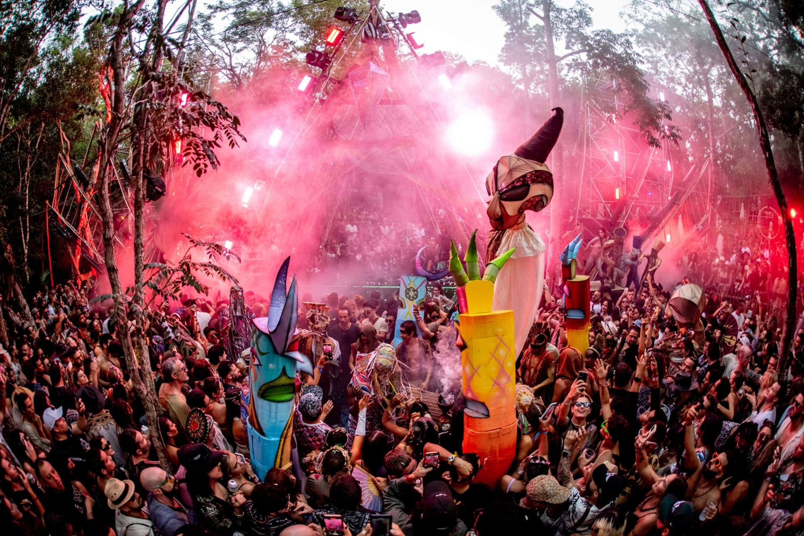

Festivals · Music
Day Zero Tulum 2027
- Dates
- Location
- Tulum, Mexico
- Format
- In-person
- Category
- Music
- Industry
- Electronic music
- Organiser
- Day Zero (Crosstown Rebels)
- Official website
- https://dayzerofestival.com/
About
Tulum is on UTC-5. Mexico dates are local (Mexico City time, UTC-6, unless the venue is in another Mexican time zone).
Topics: electronic, house, ritual.
No organiser attendance figure found on the official pages checked (23 Nov 2026). Ranked by an estimated size tier 'large' (about 10,000-100,000 attendees; our judgement from format, venue and scale, not an official number).
Sources
- Official — https://dayzerofestival.com/